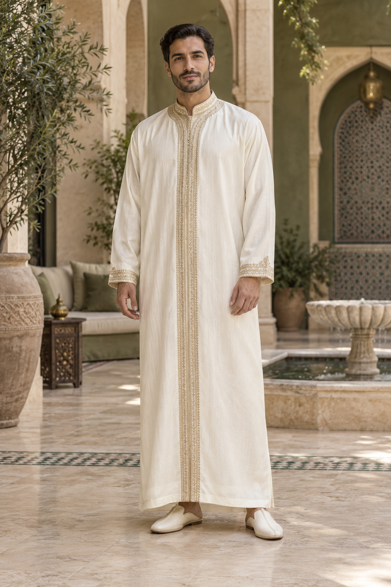

دليل الوَتِين
كيف تختار قفطاناً مغربياً رجاليًا للعرس؟

يناسب القفطان المغربي الرجالي الأعراس والمناسبات التي تتطلب إطلالة راقية. قبل الاختيار، حدد ما إذا كنت تفضل تصميماً كلاسيكياً هادئاً أو نموذجاً بتطريز واضح وحضور مميز.
ينبغي أن ينسجم لون القفطان مع وقت المناسبة. تناسب الألوان الفاتحة فترة النهار، بينما تمنح الألوان الزيتية والسوداء والداكنة أناقة خاصة في الحفلات المسائية.
اهتم بجودة الخياطة والتطريز، وتأكد من ترتيب الياقة والأكمام ومن راحة القفطان أثناء الحركة. ويساعد المقاس الصحيح على إبراز جمال التصميم.
يمكنك اكتشاف القفطان المغربي الرجالي من الوَتِين وطلبه داخل المغرب بالدفع عند الاستلام، مع التواصل لتأكيد العنوان والمقاس.
اكتشف الملابس المغربية